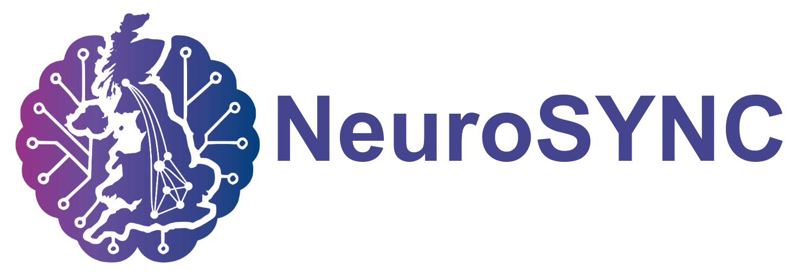

Research & roadmapping
NeuroSYNC
UK Multidisciplinary Centre for Neuromorphic Systems and Computing. A research-focused centre furthering the field and acting as the shop window for UK neuromorphic computing research. Leads the UK Neuromorphic Computing Roadmap — a near-term, living document setting out the core research and industrial foundations for the next ten years.
Visit site →